전자계산기기사 (2013-10-12 기출문제)
1과목: 시스템 프로그래밍
1. 컴파일러에 대한 설명으로 옳은 것은?
- 원시프로그램을 기계어로 바꾸는 소프트웨어이다.
- 원시프로그램을 기계어로 바꾸는 하드웨어이다.
- 기계어를 원시프로그램으로 바꾸는 소프트웨어이다.
- 기계어를 원시프로그램으로 바꾸는 하드웨어이다.
(정답률: 71%)

2. 어셈블리어의 특징으로 옳지 않은 것은?
- 각 명령어가 하나의 기계 명령에 대응되는 저급 언어이다.
- 어셈블리어는 모든 컴퓨터 기종에 공통으로 적용할 수 있다.
- 어셈블리어에서는 데이터가 기억된 번지를 기호(symbol)로 지정한다.
- 어셈블리어는 기계어와 1 대 1로 대응시켜서 표현한 기호식 표기법이다.
(정답률: 62%)
3. 매크로 프로세서가 수행해야 하는 기본적인 기능에 해당하지 않는 것은?
- 매크로 정의 저장
- 매크로 구문 인식
- 매크로 호출 인식
- 매크로 정의 인식
(정답률: 75%)
4. 프로세스의 정의로 옳은 내용 모두를 나열한 것은?
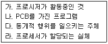
- 가, 나
- 가, 라
- 가, 나, 라
- 가, 나, 다, 라
(정답률: 71%)
5. 시스템 소프트웨어에 대한 설명으로 거리가 먼 것은?
- 운영체제는 대표적 시스템 소프트웨어이다.
- 하드웨어와 응용 소프트웨어를 연결해주는 기능을 갖는다.
- 컴퓨터의 제어 및 관리 기능을 가진다.
- 현업의 판매관리, 자재관리, 인사관리 프로그램 등도 시스템 소프트웨어에 해당된다.
(정답률: 75%)
6. 주기억장치 관리기법으로 최악 적합(Worst-fit) 방법을 이용할 경우 10K 크기의 프로그램은 다음과 같이 분할되어 있는 주기억장치 중 어느 부분에 할당되어야 하는가?
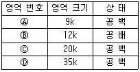
- 영역번호 Ⓐ
- 영역번호 Ⓑ
- 영역번호 Ⓒ
- 영역번호 Ⓓ
(정답률: 79%)
7. JCL(Job Control Language)에 대한 설명으로 틀린 것은?
- JCL은 OS와 사용자 간의 정보 제공 언어이다.
- JCL은 사용자 Job과 그의 시스템에 대한 요구를 일치시키는 기능을 갖는다.
- 사용자는 JCL을 이용하여 그의 JOB 단계 순서와 운영에 대한 사항을 자세히 서술하여 시스템을 제어할 수 있다.
- JCL은 기계어를 직접 수정하는 언어이다.
(정답률: 76%)
8. 로더의 기능이 아닌 것은?
- Allocation
- Compile
- Linking
- Relocation
(정답률: 87%)
9. 별도의 로더 없이 언어 번역 프로그램이 로더의 기능까지 수행하는 것은?
- Absolute Loader
- Direct Linking Loader
- Compile And Go Loader
- Dynamic Loading Loader
(정답률: 66%)
10. 어셈블러를 두 개의 패스로 구성하는 주된 이유는?
- 한 개의 패스만을 사용하면 프로그램의 크기가 증가하여 유지보수가 어렵다.
- 한 개의 패스만을 사용하면 메모리가 많이 소요된다.
- 기호를 정의하기 전에 사용할 수 있어 프로그램 작성이 용이하다.
- 패스 1, 2의 어셈블러 프로그램이 작아서 경제적이다.
(정답률: 74%)
11. 기계어에 대한 설명으로 옳지 않은 것은?
- 컴퓨터가 직접 이해할 수 있는 언어이다.
- 기종마다 기계어가 다르므로 언어의 호환성이 없다.
- 2진수 형태로 표현되며 수행 시간이 빠르다.
- 고급 언어에 해당한다.
(정답률: 72%)
12. 매크로(Macro)에 대한 설명으로 옳지 않은 것은?
- 사용자의 반복적인 코드 입력을 줄여준다.
- 매크로 라이브러리는 여러 프로그램에서 공통적으로 자주 사용되는 매크로들을 모아놓은 라이브러리이다.
- 매크로 내에 또 다른 매크로를 정의할 수 없다.
- 매크로는 문자열 바꾸기와 같이 매크로 이름이 호출되면 호출된 횟수만큼 정의된 매크로 코드가 해당 위치에 삽입되어 실행된다.
(정답률: 67%)
13. 페이지 교체 기법 중 참조 비트와 변형 비트가 필요한 것은?
- FIFO
- LRU
- LFU
- NUR
(정답률: 67%)
14. 어셈블리어에서 논리적인 비교와 결과가 양수 또는 음수인지를 검사하여 상태 레지스터의 상태 비트를 설정하는 명령은?
- NEG
- TEST
- CWD
- LEA
(정답률: 56%)
15. 매크로 정의(Macro definition) 의사명령을 사용하여 매크로 정의를 할 경우, 맨 처음과 끝에 사용되는 명령어가 알맞게 짝지어진 것은?
- MACRO, ENDM
- START, END
- CALL, RETURN
- MACRO, STOP
(정답률: 70%)
16. 어셈블리어에서 어떤 기호적 이름에 상수 값을 할당하는 명령은?
- EQU
- ASSUME
- ORG
- EVEN
(정답률: 71%)
17. 어셈블리어에서 라이브러리에 기억된 내용을 프로시저로 정의하여 서브루틴으로 사용하는 것과 같이 사용할 수 있도록 그 내용을 현재의 프로그램 내에 포함시켜 주는 명령은?
- INCLUDE
- EVEN
- ORG
- NOP
(정답률: 75%)
18. 원시 프로그램을 컴파일러로 번역하면 목적 프로그램이 생성되는데, 이 목적 프로그램은 즉시 실행할 수 없는 상태의 기계어이다. 이를 실행 가능한 로드 모듈로 변환하는 것은?
- Debugger
- Assembler
- Compiler
- Linkage Editor
(정답률: 70%)
19. 고급 언어로 작성된 프로그램을 한 줄 단위로 받아들여 번역하고, 번역과 동시에 프로그램을 한 줄 단위로 즉시 실행시키는 것은?
- 컴파일러
- 링커
- 인터프리터
- 로더
(정답률: 71%)
20. 프로그램을 실행하기 위하여 프로그램을 보조기억장치로부터 컴퓨터의 주기억장치에 올려놓는 기능을 하는 것은?
- Loader
- Preprocessor
- Linker
- Emulator
(정답률: 63%)
2과목: 전자계산기구조
21. 다음 중 3-초과 코드에 포함되지 않는 것은?
- 0011
- 0101
- 1001
- 1101
(정답률: 66%)
22. 다음 중 3-cycle 명령어에 속하지 않는 것은?
- STORE
- LOAD
- ADD
- JUMP
(정답률: 63%)
23. 중앙처리장치가 인출(fetch) 상태인 경우에 제어점을 제어하는 것은?
- 플래그(flag)
- 명령어(instruction)의 연산코드
- 인터럽트 호출 신호
- 프로그램 카운터
(정답률: 40%)
24. 부호화된 2의 보수로 표현된 데이터를 연산할 때 overflow에 대해서 잘못 설명한 것은? (단, 가장 왼쪽 비트는 부호 비트이고, 그 다음 비트는 MSB라 한다.)
- 양수끼리 더할 때 MSB에서 자리올림이 발생하지 않으면 overflow가 일어난다.
- 음수끼리 더할 때 MSB에서 자리올림이 발생하지 않으면 overflow가 일어난다.
- 부호 bit로 들어온 자리올림이 carry bit로 나가지 못하면 overflow가 일어난다.
- 부호 bit로 들어온 자리올림이 없는데 carry가 발생하면 overflow가 일어난다.
(정답률: 41%)
25. 다음 중 메모리의 Bandwidth를 증가시키는 방법으로 옳지 않은 것은?
- 메모리의 Word 개수를 늘린다.
- 메모리 버스의 데이터 Width와 Memory의 Word Size를 늘린다.
- 여러 개의 메모리 모듈을 이용한다.
- 고속의 메모리 사이클 타임을 갖는 메모리를 이용한다.
(정답률: 54%)
26. 자기 디스크(magnetic disk) 장치의 구성 요소가 아닌 것은?
- read/write head
- access arm
- disk
- cylinder
(정답률: 55%)
27. 소프트웨어에 의한 폴링 방식에 대한 설명으로 옳은 것은?
- 융통성이 있다.
- 반응속도가 빠르다.
- 정보량이 매우 적은 시스템에 적합하다.
- 인터럽트 우선순위는 하드웨어적으로 고정되어 있다.
(정답률: 44%)
28. 다음과 같은 마이크로 오퍼레이션과 관련 있는 사이클은?
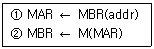
- 실행 사이클
- 간접 사이클
- 인터럽트 사이클
- 적재 사이클
(정답률: 55%)
29. 컴퓨터 내부에서 수치 정보의 표현이 만족해야 하는 조건이 아닌 것은?
- 기억공간을 작게 차지해야 한다.
- 데이터의 처리 및 CPU 내의 이동이 용이해야 한다.
- 10진수와 상호 변환이 용이해야 한다.
- 정밀도가 낮아야 한다.
(정답률: 80%)
30. 64K DRAM 기억소자를 이용하여 64K바이트 주기억 장치를 구성하고자 한다. 이 때 64K DRAM을 몇 개 사용하여야 하는가?
- 1
- 2
- 4
- 8
(정답률: 39%)
31. 아래에 있는 Algorithm이 설명하는 연산 방법은? (단, Z, X는 피연산자, Y는 연산결과)
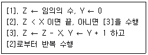
- 덧셈
- 뺄셈
- 곱셈
- 나눗셈
(정답률: 58%)
32. 인스트럭션의 설계 과정에서 고려해야 할 사항이 아닌 것은?
- Interrupt 종류
- 연산자의 수와 종류
- 데이터 구조
- 주소지정 방식
(정답률: 41%)
33. Interrupt 발생시 복귀 주소를 기억시키는데 사용되는 것은?
- accumulator
- stack
- queue
- program counter
(정답률: 62%)
34. 하나의 입력 정보를 여러 개의 출력선 중에 하나를 선택하여 정보를 전달하는데 사용하는 것은?
- 디코더(decoder)
- 인코더(encoder)
- 멀티플렉서(multiplexer)
- 디멀티플렉서(demultiplexer)
(정답률: 55%)
35. 캐시의 쓰기 정책 중 write-through 방식의 단점에 해당하는 것은?
- 주기억장치의 내용이 무효 상태인 경우가 있다.
- 쓰기 시간이 길다.
- 읽기 시간이 길다.
- 하드웨어가 복잡하다.
(정답률: 63%)
36. 명령어의 주소 부분에 실제 유효 번지가 저장되어 있는 주소를 갖고 있는 방식으로 최소한 두 번 이상의 주기억장치를 접근하는 방식은?
- 직접 주소
- 계산에 의한 주소
- 자료자신
- 간접 주소
(정답률: 69%)
37. 누산기(accumulator)란?
- 연산장치에 있는 레지스터(register)의 하나로 연산 결과를 기억하는 장치이다.
- 기억장치 주변에 있는 회로인데 가감승제 계산 및 논리 연산을 행하는 장치이다.
- 일정한 입력 숫자들을 더하여 그 누계를 항상 보관하는 장치이다.
- 정밀 계산을 위해 특별히 만들어 두어 유효 숫자의 개수를 늘이기 위한 것이다.
(정답률: 71%)
38. 인터럽트 작동 순서가 올바른 것은?
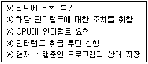
- c → e → d → b → a
- d → c → e → b → a
- e → b → c → a → d
- a → c → d → e → b
(정답률: 77%)
39. 인터럽트에 관하여 기술한 내용 중 옳지 않은 것은?
- 인터럽트의 요청장치를 인식하는 소프트웨어적인 방법인 polling 방법은 하나 이상의 장치가 인터럽트를 요청했을 때 오직 하나의 인터럽트 장치만 인식되는 단점이 있다.
- 인터럽트의 요청장치를 인식하는 하드웨어적인 방법인 daisy chain 방법은 구성상 인터럽트 장치들이 중앙처리장치에 물리적으로 가까운 순서대로 우선순위가 부여된다.
- 정전처럼 인터럽트의 신속한 처리를 위해서는 인터럽트 반응 시간이 빨라야 하므로 하드웨어적인 인터럽트 처리가 필요하다.
- 인터럽트가 발생되면 해결 후에 작업을 계속하기 위해서 어떠한 경우라도 반드시 수행 중인 프로그램을 스택 등에 보관하여야 한다.
(정답률: 44%)
40. 인스트럭션 수행시간이 20ns이고, 인스트럭션 패치시간이 5ns, 인스트럭션 준비시간이 3ns이라면 인스트럭션의 성능은 얼마인가?
- 0.4
- 0.6
- 2.5
- 4.0
(정답률: 55%)
3과목: 마이크로전자계산기
41. JTAG 인터페이스 구성시 포함되지 않는 것은?
- TDI(test data in)
- TDO(test data out)
- TCK(test clock)
- TDW(test data write)
(정답률: 43%)
42. 마이크로프로세서의 특징이 아닌 것은?
- 내부에 ALU를 가진다.
- 명령어를 해독하여 필요한 제어신호를 발생시켜 주는 제어기(control unit)를 가진다.
- 일시적으로 데이터를 기억하고 처리하기 위한 레지스터를 가진다.
- 병렬 데이터를 직렬로, 직렬 데이터를 병렬로 변화시키는 기능회로를 가진다.
(정답률: 57%)
43. 누산기(accumulator) 내용에 대한 보수를 취하는 명령이 수행될 때 산술논리 회로(ALU)에서 처리되는 내용은?
- 누산기의 값을 버스(bus)에서 옮긴다.
- 보수를 취한다.
- 프로그램 카운터(PC)를 증가시킨다.
- 명령어를 해석한다.
(정답률: 68%)
44. 메모리 0010번지에 3F가 저장되어 있고 누산기(accumulator)에 27이 기록된 상태에서 LOAD ACC를 수행하여 0010번지의 데이터를 누산기에 로드(load)하였다. 이 때 0010번지와 누산기의 내용은?
- 0010번지 : 00, 누산기 : 3F
- 0010번지 : 3F, 누산기 : 3F
- 0010번지 : FF, 누산기 : 3F
- 0010번지 : 27, 누산기 : 3F
(정답률: 58%)
45. 다음 중 전처리기라고도 하며, 고급언어로 작성된 프로그램을 그에 대응하는 다음 고급언어로 번역하는 것은?
- assembler
- preprocessor
- compiler
- interpreter
(정답률: 63%)
46. fetch cycle 수행시 적합하지 않은 마이크로 오퍼레이션은?
- IR ← DBUS, RD ← 0
- ABUS ← PC, RD ← 1
- M[ABUS] ← DBUS, WR ← 1
- DBUS ← M[ABUS]
(정답률: 59%)
47. 다음은 ROM 회로의 Logic Diagram 이다. 이에 해당하는 진리표로 옳은 것은? (단, X는 절단 상태를 의미한다.)
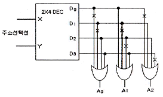
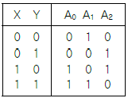
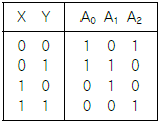
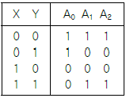
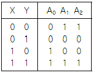
(정답률: 60%)
48. 다음 ( ) 안에 들어갈 용어로 적당한 것은?
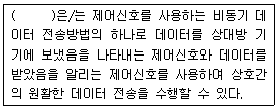
- 스트로브(strobe)
- 핸드셰이킹(handshaking)
- 폴링(polling)
- 페이징(paging)
(정답률: 76%)
49. 명령 해독기의 기능에 해당되는 것은?
- Flags를 저장한다.
- 명령어 주소를 갖는다.
- 특정 주소 방식에서 사용된다.
- Op-code를 분석한다.
(정답률: 74%)
50. 부트스트랩핑 로더(bootstrapping loader)가 하는 일은?
- 시스템을 효율적으로 사용할 수 있게 한다.
- 컴퓨터 가동시 운영체제(operating system)를 주기억장치로 읽어온다.
- 모든 주변장치를 초기화 한다.
- 명령어를 해석한다.
(정답률: 72%)
51. 명령 레지스터, 번지 레지스터, 명령 카운터 등과 관련 있는 장치는?
- 기억 장치
- 연산 장치
- 입력 장치
- 제어 장치
(정답률: 67%)
52. DMA 제어장치가 꼭 갖추어야 할 필수 레지스터가 아닌 것은?
- status register
- program counter
- data counter
- address register
(정답률: 62%)
53. 마이크로프로그램 제어 명령어(Micro-program Control Instruction) 중에서 번지가 필요 없는 무번지 명령은?
- CPL(complement)
- BR(branch)
- AND(and)
- CALL(call)
(정답률: 49%)
54. 비수치 처리, 특히 데이터베이스를 다루는 컴퓨터 시스템에서 데이터베이스 처리 전용으로 주컴퓨터에 결합해서 사용하는 프로세서는?
- 백엔드 프로세서
- 코프로세서
- 비트 슬라이스 마이크로프로세서
- 스칼라 프로세서
(정답률: 45%)
55. 램프를 순차적으로 구동시키기 위한 지연루프(Delay Loop)가 아래그림에 표시되었다. 명령어 수행시간을 고려할 때 1[msec]의 지연시간을 갖기 위한 N 값은? (단, N은 16진수이며, 명령어 수행시간 A=N;1sec, NOP;2sec, A=A-1;3sec, A=0;4sec이다.)
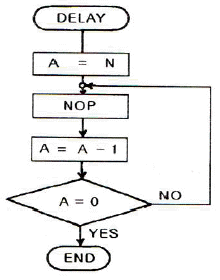
- 66
- 6F
- 77
- 7E
(정답률: 72%)
56. CPU가 시스템 버스를 사용하지 않는 시간을 이용하여 DMA 기능을 수행하는 방식을 무엇이라 하는가?
- burst 방식
- cycle stealing 방식
- paging 방식
- interrupt 방식
(정답률: 69%)
57. 프로그램 크기가 가장 작은 주소 형식은?
- 0-주소형식
- 1-주소형식
- 2-주소형식
- 3-주소형식
(정답률: 68%)
58. 다음 파일의 종류 중 거래가 있을 때마다 발생한 데이터를 모아두는 파일을 말하는데, 마스터 파일에 새로운 레코드를 추가하거나 현존하는 레코드를 수정하기 위한 데이터를 가지고 있는 파일은?
- 히스토리 파일(history file)
- 변경 파일(update file)
- 기본 파일(base file)
- 트랜잭션 파일(transaction file)
(정답률: 58%)
59. SP(stack pointer)가 기억하고 있는 내용의 메모리 번지를 지정하는 스택 구조는?
- 연속(cascade) 스택
- ahebffffff(module) 스택
- 메모리 스택
- 간접번지지정 스택
(정답률: 60%)
60. SRAM이 DRAM보다 장점인 특성은 어느 것인가?
- 메모리 용량
- 전력손실
- 비트당 가격
- 액세스 시간
(정답률: 73%)
4과목: 논리회로
61. RS 플립플록을 [그림]과 같이 결선하면 무슨 플립플롭이 되는가?
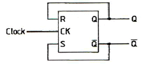
- RS 플립플롭
- T 플립플롭
- D 플립플롭
- JK 플립플롭
(정답률: 40%)
62. 다음 [그림]과 같은 논리회로도의 명칭은?
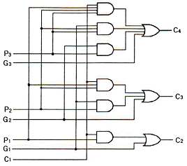
- Look-ahead carry generator
- Decimal adder
- Magnitude Comparator
- Decoder
(정답률: 47%)
63. 다음 논리회로를 간단히 하면?
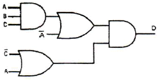
- D=ABC+AC'
- D=AABC+ABCC'+A'A+ABC'
- D=AABC+ABCC'+A'AC'
- D=ABC+A'C'
(정답률: 53%)
64. 레지스터의 기능은?
- 펄스를 발생시킨다.
- 정보를 일시 저장한다.
- 계수기의 대용으로 쓰인다.
- 회로를 동기시킨다.
(정답률: 60%)
65. 다음 [그림]의 연산회로 이름은?
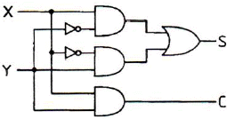
- half adder
- full adder
- half subtracter
- full subtracter
(정답률: 43%)
66. 부호 및 절대값 코드를 사용하여 full scale이 ±10V의 10bit 양극성 D/A 변환기가 있다. 디지털 입력 1110000000에 대한 출력 값은?
- +7.5V
- -7.5V
- +8.5V
- -8.5V
(정답률: 63%)
67. JK 플립플롭에서 J=0, K=1일 때의 Q(t+1)은?
- 0
- 1
- Q(t)
- Don't care
(정답률: 42%)
68. 2단으로 구성된 T형 플립플롭에 20[kHz]의 주파수를 공급할 때, 출력 주파수는?
- 5[kHz]
- 10[kHz]
- 15[kHz]
- 20[kHz]
(정답률: 30%)
69. 8진 카운터를 구성하고자 할 경우 최소 몇 개의 JK 플립플롭이 필요한가?
- 3개
- 4개
- 8개
- 16개
(정답률: 66%)
70. 74LS374와 같은 74시리즈 TTL IC의 타입 이름에 포함된 영문자 "LS"의 의미는?
- 고집적회로
- 저전력 고속도
- 장기수명 고속도
- 고전력 고안정도
(정답률: 63%)
71. 프로그래머블 논리어레이(PLA)에 관한 설명 중 틀린 것은?
- ROM에서와 같이 PLA도 마스크 프로그래머블(Mask-programmable) 형태로 할 수 있다.
- AND, OR 및 링크(Link)로 구성되어 임의의 논리기능을 수행하는 IC이다.
- 무정의 조건(Don't care condition)이 많은 회로에서는 ROM보다 비경제적이다.
- PLA 프로그램표(Program table)를 작성하여 회로를 설계한다.
(정답률: 68%)
72. 다음 회로의 출력(F)으로 옳은 것은? (단, A=0101이다.)
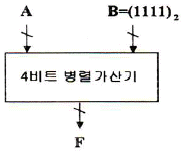
- F=A*B
- F=A+1
- F=A-1
- F=A
(정답률: 44%)
73. F(w,x,y,z) = Σ(0,1,2,4,5,6,8,9,12,13,14) 불 함수를 간략화한 결과는?
- F=x+y+wz
- F=y'+z'+xy
- f=y'+w'z'+xz'
- F=x+z
(정답률: 58%)
74. 다음 논리회로의 출력 F는?
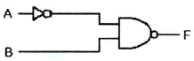
- A'+B
- A+B'
- A+B
- A'+B'
(정답률: 72%)
75. f(A,B,C) = Σm(1,2,3,5)일 때 f을 바르게 나타낸 것은?
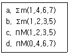
- a, c
- a, d
- b, c
- b, d
(정답률: 54%)
76. Karnaugh map을 이용하여 함수 F를 간략화 하려고 한다. 이 때 NAND 게이트만을 사용한다면 필요한 최소의 게이트수와 fan-in의 합은 각각 얼마인가? (단, X는 don't care를 의미한다.)
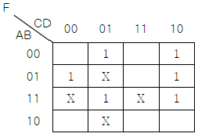
- 게이트 수 : 5, fan-in의 합 : 14
- 게이트 수 : 5, fan-in의 합 : 13
- 게이트 수 : 6, fan-in의 합 : 16
- 게이트 수 : 6, fan-in의 합 : 15
(정답률: 62%)
77. 가산과 감산의 기능을 갖는 연산회로를 설계하기 위해 꼭 필요한 게이트는?
- AND
- OR
- EX-NOR
- EX-OR
(정답률: 72%)
78. 논리식 B(A+B)를 간단히 하면?
- A
- B
- 1
- AB
(정답률: 43%)
79. 6개의 플립플롭으로 구성된 2진 카운터는 0부터 몇 까지 카운트할 수 있는가?
- 6
- 32
- 63
- 64
(정답률: 37%)
80. 16진수인 다음 식의 연산 값은?
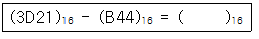
- 31DD
- 3B12
- 21D0
- 2D13
(정답률: 60%)
5과목: 데이터통신
81. 라우팅 방식 중 패킷이 소스 노드로부터 모든 인접 노드로 broadcast 되는 방식은?
- flooding
- random routing
- adaptive routing
- fixed routing
(정답률: 65%)
82. 비 연결형(connectionless) 네트워크 프로토콜에 해당하는 것은?
- HTTP
- TCP
- IP
- X.25
(정답률: 59%)
83. 전송매체에서 발생할 수 있는 전송 손상 요인으로 거리가 가장 먼 것은?
- 감쇠현상
- 지연왜곡
- 잡음
- 채널용량
(정답률: 67%)
84. TCP/IP 관련 프로토콜 중 인터넷 계층에 해당하는 것은?
- SNMP
- HTTP
- TCP
- ICMP
(정답률: 52%)
85. HDLC(High-Level Data Link Control)에 대한 설명으로 잘못된 것은?
- 양방향으로 동시에 메시지를 일정한 범위까지는 응답없이 연속적으로 전송할 수 있게 함으로써 회선의 전송효율을 향상시키고 있다.
- 모든 프레임에 전송 에러 검사를 위해 에러 검출 부호가 부가되기 때문에 신뢰성이 높은 통신이다.
- 통신 모드에는 NRM(Normal Response Mode), ABM(Asynchronous Balanced Mode), ARM(Asynchronous Response Mode) 이렇게 세가지가 있다.
- 전송 제어를 위해 전송제어문자(STX, ETX, ACK 등)를 사용한다.
(정답률: 47%)
86. 컴퓨터를 이용한 정보통신 시스템에서 정확한 데이터를 주고받기 위해서는 컴퓨터 간의 미리 정해진 약속이 필요하다. 이러한 약속을 무엇이라 하는가?
- Topology
- Protocol
- OSI 7 layer
- DNS
(정답률: 79%)
87. PCM(Pulse Code Modulation) 방식에서 PAM(Pulse Amplitude Modulation) 신호를 얻는 과정이다.
- 표본화
- 양자화
- 부호화
- 코드화
(정답률: 56%)
88. 시분할 다중화 방식에 대한 설명으로 틀린 것은?
- 동기식 시분할 다중화 방식은 전송 시간을 일정한 간격의 시간 슬롯으로 나누고, 이를 주기적으로 각 채널에 할당한다.
- 통계적 시분할 다중화 프레임 내의 시간 슬롯의 위치로 채널이 구분되기 때문에 별도의 주소 정보가 필요하지 않다.
- 통계적 시분할 다중화 방식은 전송 데이터가 있는 경우에만 시간 슬롯을 할당한다.
- 동기식 시분할 다중화 방식에서는 전송 프레임마다. 각 시간 슬롯이 해당 채널에게 고정적으로 할당되기 때문에 결과적으로 전송 매체의 전송 능력이 낭비된다.
(정답률: 38%)
89. PPP(Point-to-Point Protocol)에 대한 설명으로 틀린 것은?
- 점대점 링크를 통하여 인터넷 접속에 사용되는 IETF의 표준 프로토콜이다.
- 오류 검출만 제공되며 재전송을 통한 오류 복구와 흐름 제어 기능 등은 제공되지 않는다.
- 데이터 전송을 위해 HDLC와 같은 비트 채움 방식을 사용한다.
- 점대점 링크를 통하여 IP 패킷의 캡슐화를 제공한다.
(정답률: 24%)
90. 하나 또는 그 이상의 터미널에 정보를 전송하기 위한 데이터링크 확립 방법 중 폴링(polling) 방법에 관한 설명으로 옳은 것은?
- 주 스테이션이 특정한 부 스테이션에게 데이터를 전송할 경우 데이터를 받을 준비가 되어있는지를 확인하는 방식이다.
- 주 스테이션이 각 부 스테이션에게 데이터 전송을 요청하는 방식이다.
- 하나의 터미널을 선택하여 수신 준비 여부를 문의한 후에 데이터를 전송한다.
- 하나의 터미널을 선택하여 수신 여부를 확인하지 않고 그대로 데이터를 전송한다.
(정답률: 35%)
91. 현재 많이 사용되고 있는 LAN 방식인 "10BASE-T"에서 "10"이 가리키는 의미는?
- 데이터 전송 속도가 10Mbps
- 케이블의 굵기가 10 밀리미터
- 접속할 수 있는 단말의 수가 10대
- 배선할 수 있는 케이블의 길이가 10미터
(정답률: 72%)
92. 데이터 통신에서 발생할 수 있는 오류(error)를 검출하는 기법이 아닌 것은?
- Parity Check
- Run Length Check
- Block Sum Check
- Cyclic Redundancy Check
(정답률: 37%)
93. OSI 7계층 중 응용간의 대화 제어(dialogue control)를 담당하는 것은?
- application layer
- session layer
- transport layer
- data link layer
(정답률: 54%)
94. 위상을 이용한 디지털 변조 방식으로 옳은 것은?
- ASK
- FSK
- PSK
- PCM
(정답률: 50%)
95. 세 이상의 스테이션들을 공유된 전송 회선으로 연결함으로써 보다 효율적으로 링크를 이용하는 방식으로 하나의 회선이나 하나의 컴퓨터에 여러개의 단말기가 접속되어 있는 회선구성 방시은?
- 점대점 링크 방식
- 멀티드롭 방식
- 전이중 방식
- 반이중 방식
(정답률: 63%)
96. 무선 LAN의 장점으로 볼 수 없는 것은?
- 효율성
- 확장성
- 이동성
- 보안성
(정답률: 69%)
97. 다음이 설명하고 있는 프로토콜은?
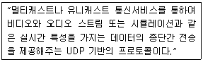
- IP
- TCP
- RTP
- FTP
(정답률: 31%)
98. 동기식 전송 방식에 대한 설명으로 옳은 것은?
- 비동기 전송에 비해 고속의 데이터 전송이 가능하다.
- 각 글자는 1개의 start bit와 1~2개의 stop bit를 갖는다.
- 일반적으로 비동기 전송에 비해 오버헤드가 훨씬 높다.
- 동기는 문자 단위로만 이루어지고, 송수신측이 항상 동기 상태에 있을 필요는 없다.
(정답률: 52%)
99. OSI 7계층 중 모뎀이나 RS-232C와 같이 전기적 신호의 전송과 관계있는 계층은?
- 물리계층
- 표현계층
- 네트워크계층
- 응용계층
(정답률: 48%)
100. HDLC(High-level Data Link Control) 프레임 형식으로 옳은 것은?
- 플래그, 제어영역, 주소영역, 정보영역, FCS, 플래그
- 플래그, 주소영역, 제어영역, 정보영역, FCS, 플래그
- 플래그, 주소영역, 정보영역, 제어영역, FCS, 플래그
- 플래그, 정보영역, 제어영역, 주소영역, FCS, 플래그
(정답률: 70%)